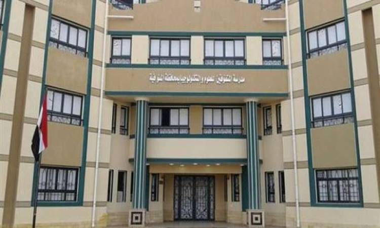

مدراس المتفوقين بوابه مصر فى القرن 21
وتعد فئة المتفوقين والنابغين دراسيا، قاطرة التقدم للأمة والثروة الحقيقية لمستقبلها، والتى تحتاج لبذل الكثير من الجهد من أجل تنمية قدراتهم ومهاراتهم، وتوجيه موهبتهم للطريق الصحيح من أجل خدمة أوطانهم، ومن هنا جاءت لمصر فكرة إنشاء مدارس المتفوقين فى العلوم والتكنولوجيا STEM.
مدارس STEM للمتفوقين
هى مجموعة مدارس داخلية ثانوية حكومية فى جمهورية مصر العربية تتبع وزارة التربية والتعليم والتعليم الفنى، وأنشأت بقرار من وزير التربية والتعليم رقم 369 لسنة 2011، بدعم ومنحة من الوكالة الأمريكية للتنمية الدولية بقيمة 124 مليون دولار أمريكى.
وتنتهج هذه المدارس نظام تعليم STEM وهو نظام تعليمى يستخدم لتجميع تخصصات العلوم، التكنولوجيا، الهندسة، والرياضيات وتدريسها معا، ويهدف إلى تحسين القدرة التنافسية للطلاب فى تطوير العلوم والتكنولوجيا والرياضيات، وكذلك الاهتمام وتطوير قدرات المتفوقين فى التخصصات العلمية.
وبدأت فكرة المدارس كمنحة أمريكية ضمن مشروع الوكالة الأمريكية للتنمية الدولية USAID لرعاية الطلاب المتفوقين فى الرياضيات والعلوم فى مصر، وكانت البداية سنة 2011 بمدرسة المتفوقين فى العلوم والتكنولوجيا (بنين) بمدينة السادس من أكتوبر بمحافظة الجيزة، وأول مدرسة (بنات) تم إنشاؤها فى المعادى عام 2012.
وفى عام 2015/2016، تم التوسع بإنشاء سبع مدارس بتوجيهات من رئيس الجمهورية، ثم توسعت حتى وصل عدد المدارس فى العام الدراسى 2022/2023 إلى 19 مدارسة فى عدة مدن ومحافظات مصرية، ومع افتتاح عدد من الفروع هذا الفصل الدراسى، يصل إجمالى عدد الأفرع إ لى 22 فرع على مستوى الجمهورية.
وتصل مدة الدراسة فى مدارس STEM لثلاث سنوات، والإقامة الداخلية للطلاب إجبارية.
وتراعى مدارس STEM فى مناهجها تغطية الموضوعات التى تدرس فى مدارس الثانوية العامة، مع تطبيق طرق التدريس الحديثة بنظام مجموعات العمل، مع مراعاة ألا يزيد عدد الطلاب فى الفصل الواحد عن 25 طالبا. ويحصل خريجوا مدارس STEM على شهادة الثانوية العامة فى العلوم والتكنولوجيا للمتفوقين.
ويتم تأسيس مدارس STEM للمتفوقين بأحدث الأجهزة العملية والمعامل المتطورة، فهى تضم فصول دراسية ومعامل كيمياء، فيزياء، أحياء، إلكترونيات، لغات، هيدروليك، جيولوجيا، روبوتيك، كمبيوتر، ومعمل ابتكارات، وقاعات طعام، وقاعات للاستذكار.